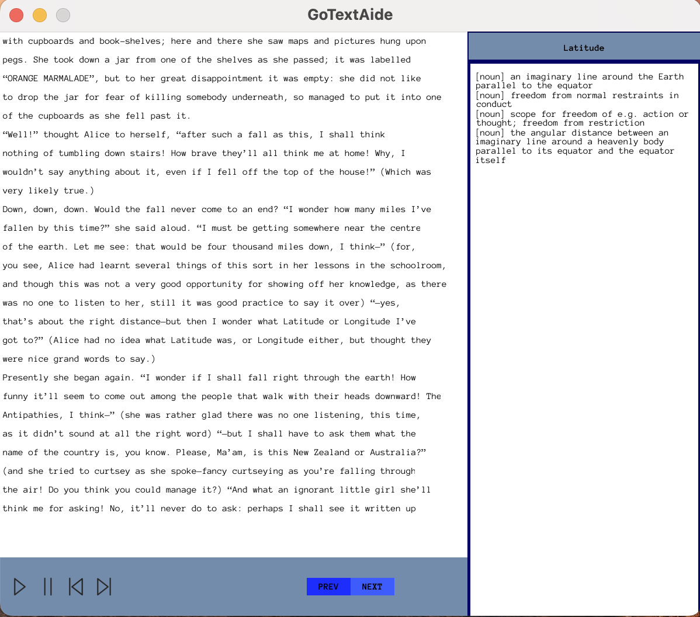
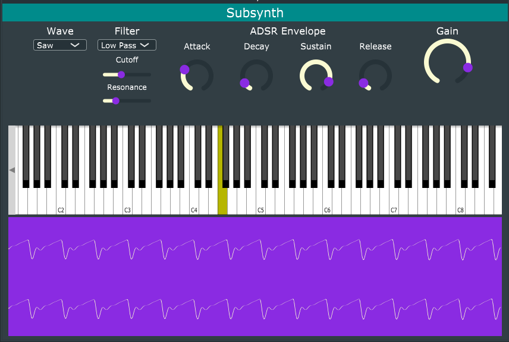
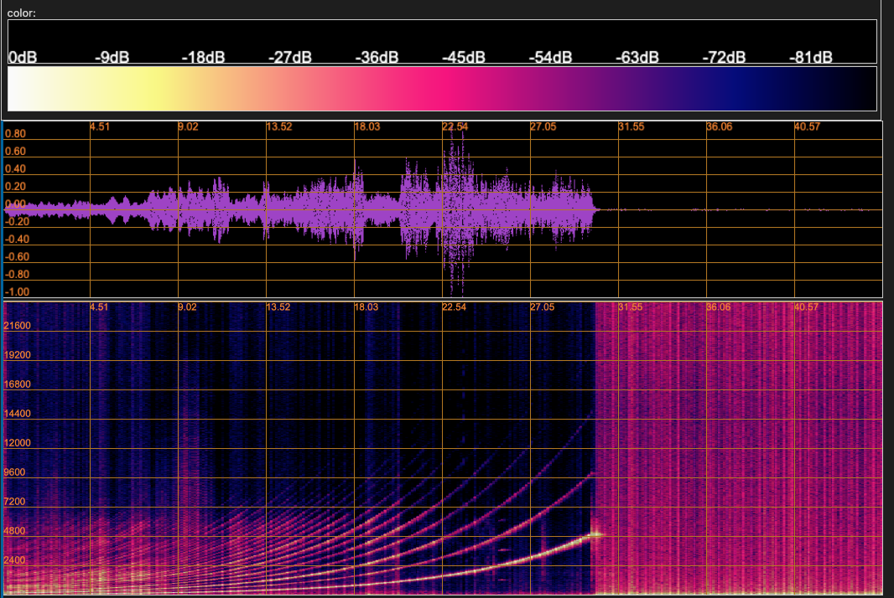

about
I am currently completing a Masters degree in Computer Science. I am working on a project to study the paradigms and challenges in concurrency and concurrent models. I am interested in building resilient cloud infrastructure and the services. I am constantly curious about process and the best approaches to tackle problems - whether I'm working on software, cooking, baking, or word puzzles. I will pursue opportunities to follow my curiosity, collaborate with others, and strive to create better systems and tools that are accessible to everyone.
experience
act-on software - operations intern - jan-jun 2021
Six-month internship at an email marketing automation company. I worked on a cross-functional Operations team, managing CI/CD and networking for internal teams.
- Refactored 15 Jenkins Pipelines by introducing Jenkins Shared Libraries to eliminate errors, increased reusability and portability, increase team productivity by 10%
- Led informational session on Jenkins Shared Libraries for Operations team
- Revived Python/Flask microservice for SSL certificate automation renewal service
- Integrated new Splunk to Slack functionality in the above microservice, which supplied Act-On's support team additional 30 days for renewal resolutions
apex clearing - development intern - jul-dec 2020
Six-month internship with a digital custody and clearing house. The team was responsible for orchestrating internal processing of daily trade and shepherding trade executions from customer to bookkeeper.
- Expanded functionality for ingest of trade execution data from 4 to 6 data formats
- Introduced first metrics dashboards on team for monitoring and tracking trade parsing at the behest of team engineering lead
- Designed and implemented visual event tracking with Prometheus; incorporated 100+ daily log messages from Kafka event streams with PromQL
projects
GoTextAide
A desktop application meant to facilitate word definition lookups while reading text. An exploration of concurrency paradigms, as well as what support is provided by Go versus Python. Graphics rendering using Go and Python bindings for GLFW and OpenGL.
SubSynth
A digital music synthesizer. Created with classmates in CS510 Computers, Sound and Music. We used subtractive synthesis, a method for creating and manipulating sound waves. Project features include: three oscillators (sine wave, triangle wave, and sawtooth wave patterns); an ADSR envelope for control overthe attack, delay, sustain and release of notes); onscreen keyboard and external MIDI keyboard options; a visualizer that reacts to the user's input on the keyboard. Built with JUCE, a robust C++ application framework.
RIR Processor
A room impulse response processor module in Python. This project centered around an attempt to replicate methods laid out by Angelo Farina in “Simultaneous Measurement of Impulse Response and Distortion With a Swept-Sine Technique" [see paper]. Built using NumPy/SciPy and standard Python modules.
